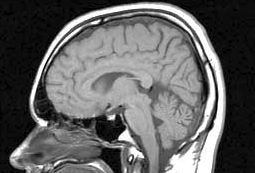

Lest We Forget
The Effect of Diet on Memory
Ning Ma
Spring 2011

One of the most unique parts of the human experience is our ability to
remember and recall. Memory helps shape who we were, who we are, and
who we become. Yet, as people age some memories begin to fade away. In
extreme cases, memory loss is significant and extremely disruptive to
the ability to function as a human being.
In the past, many researchers have studied
the effects of various calorie-restricted diets on health. Studies have
shown that a low-calorie diet can improve longevity, especially when it
is low in saturated fats and rich in antioxidants. Specifically,
research conducted by Dr. Clive McCay at Cornell University showed that
a caloric-restricted diet could double the lifespan of rats. Similar
studies have found that low-calorie diets are effective in delaying the
degeneration of neurons as a result of aging. However, these
experiments have not confirmed the same benefits in the human brain.
A recent study conducted by the Department
of Neurology at Columbia University has shown that a Mediterranean diet
can help prevent mild cognitive impairment. This type of diet is
composed primarily of fish, vegetables, legumes, fruits, cereals, and
unsaturated fats; consequently, Mediterranean diets are low in dairy,
meat and saturated fats.
Mild cognitive impairment is a stage of
memory loss between typical aging and Alzheimer’s. A study
published in the Archives of Neurology showed that those who had a diet
similar to the Mediterranean diet had a 28% lower risk of developing a
form of cognitive impairment during a 4.5 year observation period. For
those with pre-existing mild cognitive impairments, a Mediterranean
diet was associated with a 48% reduced risk of developing Alzheimer’s
compared to other diets. According to the study, the reduced risk
can be attributed to improvements in blood sugar levels and insulin
resistance, which are correlated to a reduced risk of developing
cognitive impairments.
A slightly different study by Dr. A.V. Witte,
sponsored by the National Academy of Sciences, found that elderly
people who curbed their caloric intake by 30% were better able to
recall a list of 15 words after half an hour. Witte’s recent research
included 50 people aged 52-68. Twenty of the participants cut
their caloric intake by 30% while a second group of 20 volunteers
ingested more unsaturated fatty acids from olive oil and fish. The 10
remaining volunteers served as the control group. The diet lasted
for three months. Witte controlled for any changes in height, weight,
and other relevant physical metrics.
Witte’s experiment showed that the group
who adhered to the low-calorie regime demonstrated better recall
ability at the end of three months. He also found that low-calorie
intake resulted in lower levels of C-reactive protein, a protein
produced by fat cells and linked to inflammation. Studies have shown
that lower levels of C-reactive protein is linked to higher scores in
word-learning tasks.
What could explain this change? In the
brain, insulin is involved in signaling pathways that protect neurons
and play a role in securing long-term memories. Excess insulin,
however, builds insulin resistance that weakens the body’s use of
insulin as a signaling molecule. Therefore, a low calorie diet could
improve memory by sensitizing the body to the hormone and improving the
insulin-signaling pathway. Blood samples of the volunteers who had
followed the Mediterranean diet showed lower levels of insulin; those
with largest drops in insulin showed the highest improvements in
memory. Witte’s research supports the notion that sensitizing the
insulin pathway could in fact improve memory.
In fact, research has shown that diabetes
medication can effectively improve memory. Researchers at the
University of Washington showed that patients who were given
twice-daily doses of an insulin nasal spray for four months experienced
improved memory. The study involved 109 Alzheimer’s patients. A third
of the patients were given a placebo nasal spray, while the other
two-thirds received twice-daily doses of insulin nasal spray.
Researchers found a significant improvement in memory and ability to
perform daily tasks in those who received the insulin
spray.
Overall, recent research in various
medical fields from endocrinology to neurology all point to the
importance of diet on memory. Specifically, a low-calorie diet that is
low in saturated fats and high in antioxidants is best for both
prolonging lifespan and improving the ability to make and retain
memories. These benefits can be attributed to the restored insulin
sensitivity that results from a low calorie diet. Reduced sensitivity
to insulin prevents proper function of brain cells pertinent to memory,
especially for women. As indicated in recent research, it is actually
effective to use diabetes medicine to alleviate Alzheimer’s because of
the very importance of insulin sensitivity on memory.
The research suggests a relatively easy
way to improve memory in old age: cut down caloric intake by eating
fewer foods high in saturated fats, and consume more foods high in
antioxidants and unsaturated fats.